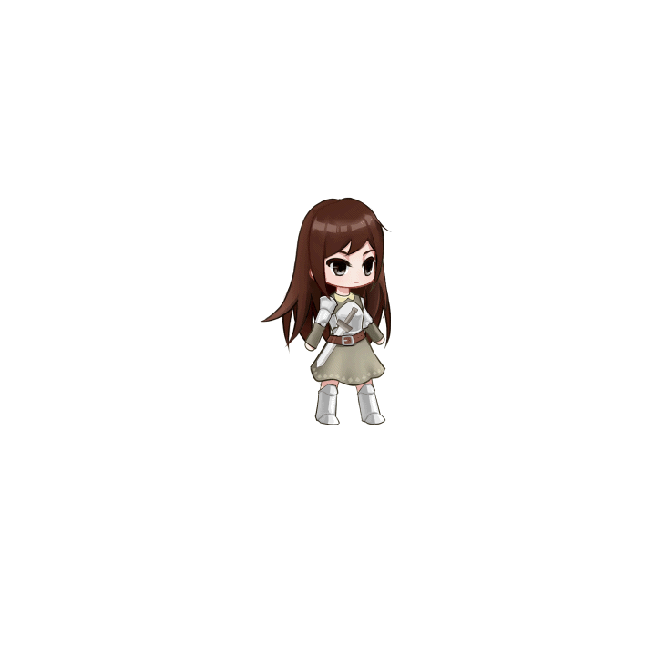

This project was a 2D side scrolling adventure type game with an emphasis on a narrative-story based
experience as well as its gameplay. This project was my first full video game project. While the time of
development was only 3 weeks, with a combined effort of 3 other people, Nicco Pucci (Co-Programmer), Yitian
Zhang (Co-Programmer), and Zhixiu Zhu (Artist), we were able to create an ambitious game in such a small
development window.
My role for this project was the project manager, game designer, and 2D animator.
As the project manager, my responsibility for my team is to keep track of everyone's task and decide the
time frame of which a task should be finish. Time management in this project was key, as this was our team's
first experience with the Unity 3D engine.
The issue I faced with my task was the 2D animation part. I used the Live2D Engine for 2D animations as part
of gameplay. However,
this engine was not meant to be used to create as part of gameplay but as a visual aesthetic such as
creating movements in the background.
Live2D Engines are mostly used to create animations for a 2D character portrait, and again for visual
aesthetic.


To get around this, I worked on the animation as if it was a standard animation program, meaning I worked on
it
by translating body parts manually at a certain time frame to create movements. This also includes the hair
of the character
which I had to split the hair into multiple sections to simulate a flowing movement instead of moving the
entire hair.
Then I export the animation in png frames and construct them in Unity as animation by frames.
While this solution was very clumsily implemented, within Unity Engine it worked great. With great feedback
about the
animations from the professors and peers. Live2D Engine is a program that is not very widely popularized but
it can
produce some fantastic looking animations when done right.